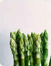
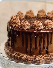
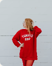
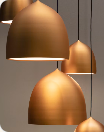

QUEM FAZ A CIDADE ACONTECER
Produtores locais
Conheça pessoas e negócios de Novo Horizonte que colocam trabalho, cuidado e
história em cada oferta.
6 ANUNCIANTES ENCONTRADOS



Nenhum produtor encontrado com esses filtros.